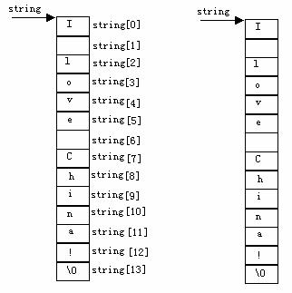

把二维数组a分解为一维数组a[0],a[1],a[2]之后，设p为指向二维数组的指针变量。可定义为：
int (*p)[4]
它表示p是一个指针变量，它指向包含4个元素的一维数组。若指向第一个一维数组a[0]，其值等于a,a[0]，或&a[0][0]等。而p+i则指向一维数组a[i]。从前面的分析可得出*(p+i)+j是二维数组i行j 列的元素的地址，而*(*(p+i)+j)则是i行j列元素的值。
二维数组指针变量说明的一般形式为：
类型说明符 (*指针变量名)[长度]
其中“类型说明符”为所指数组的数据类型。“*”表示其后的变量是指针类型。“长度”表示二维数组分解为多个一维数组时，一维数组的长度，也就是二维数组的列数。应注意“(*指针变量名)”两边的括号不可少，如缺少括号则表示是指针数组(本章后面介绍)，意义就完全不同了。
main(){
int a[3][4]={0,1,2,3,4,5,6,7,8,9,10,11};
int(*p)[4];
int i,j;
p=a;
for(i=0;i<3;i++)
{for(j=0;j<4;j++) printf("%2d ",*(*(p+i)+j));
printf("\n");}
}
在C语言中，可以用两种方法访问一个字符串。
1)用字符数组存放一个字符串，然后输出该字符串。
main(){
char string[]=”I love China!”;
printf("%s\n",string);
}
说明：和前面介绍的数组属性一样，string是数组名，它代表字符数组的首地址。

2)用字符串指针指向一个字符串。
main(){
char *string=”I love China!”;
printf("%s\n",string);
}
字符串指针变量的定义说明与指向字符变量的指针变量说明是相同的。只能按对指针变量的赋值不同来区别。对指向字符变量的指针变量应赋予该字符变量的地址。
如：
char c,*p=&c;
表示p是一个指向字符变量c的指针变量。
而：
char *s="C Language";
则表示s是一个指向字符串的指针变量。把字符串的首地址赋予s。
上例中，首先定义string是一个字符指针变量，然后把字符串的首地址赋予string(应写出整个字符串，以便编译系统把该串装入连续的一块内存单元)，并把首地址送入string。程序中的：
char *ps="C Language";
等效于：
char *ps; ps="C Language";
main(){
char *ps="this is a book";
int n=10;
ps=ps+n;
printf("%s\n",ps);
}
运行结果为：
book
在程序中对ps初始化时，即把字符串首地址赋予ps，当ps= ps+10之后，ps指向字符“b”，因此输出为"book"。